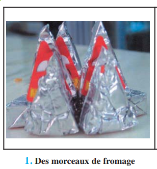
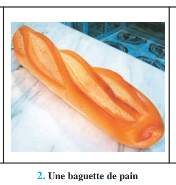
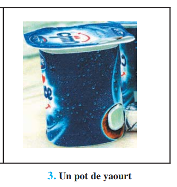
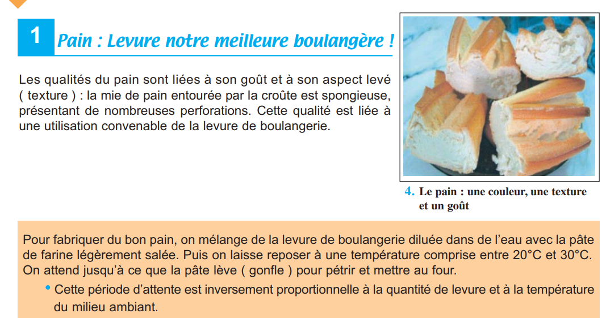
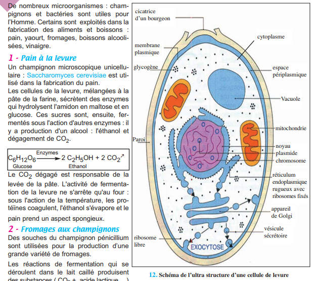
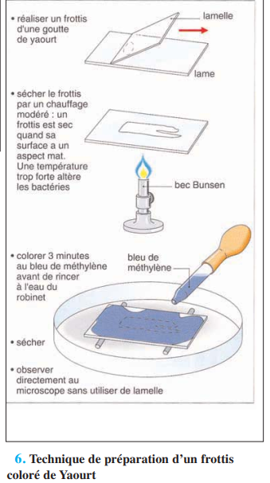
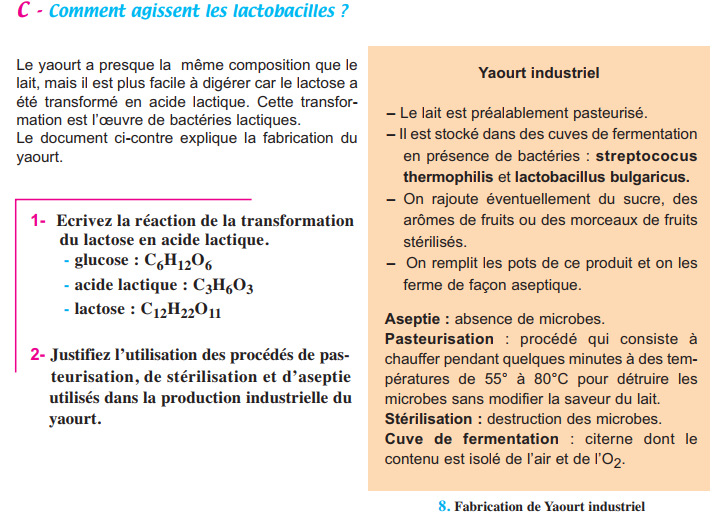
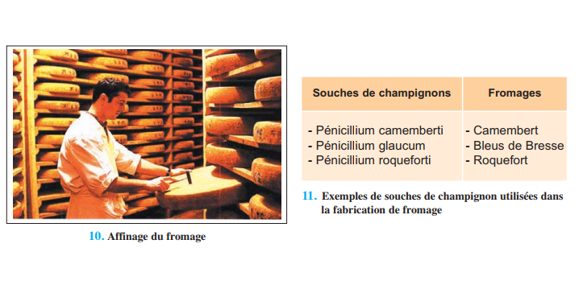

D'après le programme officiel tunisien (Thème 1, Partie III), ce chapitre vise à :
1 Montrer le rôle des levures et des bactéries dans la production d'aliments (pain, yaourt, fromage)
📚 Situation Problème (p.107)
L'environnement n'est pas seulement source de nuisance pour la santé. L'industrie alimentaire exploite divers microorganismes pour fabriquer des aliments très consommés : pain, yaourt, fromage. La découverte de microorganismes utiles et la sélection de souches performantes est une préoccupation majeure de la recherche en agroalimentaire. Louis Pasteur (1822-1895) fut le premier à démontrer l'intervention de microorganismes dans ces productions et mit au point la pasteurisation. En 1929, Daniel Carasso créa le premier yaourt industriel (Danone).

📷 Doc.1 — 1. Des morceaux de fromage (p.107)
'">

📷 Doc.2 — 2. Une baguette de pain (p.107)
'">

📷 Doc.3 — 3. Un pot de yaourt (p.107)
'">
📚 Préacquis — Bilan Ch.4 (Respiration) et Ch.5 (Microorganismes)
La respiration cellulaire (Ch.4) dégrade complètement le glucose en présence d'O₂ (CO₂ + H₂O + 36 ATP). En absence d'O₂, certains organismes réalisent des fermentations : dégradation incomplète du glucose produisant peu d'ATP mais des molécules utiles (éthanol, acide lactique). Tous les microorganismes ne sont pas pathogènes (Ch.5) — certains sont indispensables à l'industrie alimentaire.
✏️ Mini-quiz — Préacquis
1. La fermentation se déroule .
2. La pasteurisation consiste à .
💡 À retenir : Contrairement au Ch.5 qui traitait des microorganismes pathogènes, ce chapitre montre leur utilité. Les fermentations sont des processus métaboliques ancestraux qui permettent aux microorganismes de survivre sans O₂. L'Homme a appris à les exploiter pour transformer et conserver les aliments.
❓ 2 Questions directrices (p.108)
Comment l'Homme exploite-t-il les microorganismes pour produire des aliments ?
Y a-t-il une relation entre l'activité cellulaire du microorganisme et les qualités des aliments fabriqués ?
🧠 Comprendre avant de mémoriser
De nombreux microorganismes — champignons (levures, moisissures) et bactéries (lactiques) — sont utilisés dans la fabrication d'aliments. Le pain résulte de la fermentation alcoolique par la levure (Saccharomyces cerevisiae) : dégagement de CO₂ qui fait lever la pâte. Le yaourt provient de la fermentation lactique par des bactéries (Lactobacillus bulgaricus, Streptococcus thermophilus) : transformation du lactose en acide lactique qui fait cailler le lait. Les fromages doivent leur diversité à l'action de champignons (Pénicillium roqueforti) et à la présure pendant l'affinage.
Clique sur chaque notion · Pièges CAPES et connexions révélés
🍞
Pain
Fermentation alcoolique
🥛
Yaourt
Fermentation lactique
🧀
Fromage
Affinage · Présure
⚠️
3 Pièges
Erreurs fréquentes
🍞 Le Pain — Fermentation alcoolique
La levure de boulangerie (Saccharomyces cerevisiae) est un champignon unicellulaire eucaryote. Mélangée à la pâte, elle hydrolyse l'amidon de la farine en maltose puis glucose, puis fermente ce glucose en éthanol + CO₂. Le CO₂ gazeux fait lever la pâte en formant des alvéoles. L'éthanol s'évapore à la cuisson. Si la fermentation est trop longue → goût aigre (production d'acide).
🥛 Le Yaourt — Fermentation lactique
Les bactéries lactiques (Lactobacillus bulgaricus, Streptococcus thermophilus) sont des procaryotes. Elles transforment le lactose (sucre du lait) en acide lactique. L'acidification provoque la coagulation des protéines du lait (caséine) → formation du gel caractéristique du yaourt. Le yaourt au « bifidus » utilise d'autres souches (Bifidobacterium).
🧀 Le Fromage — Diversité microbienne
La présure (enzyme) fait cailler le lait. L'ajout de souches de champignons (Pénicillium roqueforti pour le Roquefort) et l'affinage en cave (T° constante, humidité) permettent le développement de moisissures qui donnent au fromage sa texture, son goût et son arôme uniques. La diversité des souches utilisées explique la diversité des fromages.
⚠️ 3 Pièges du CAPES
⚠️ Ne pas confondre fermentation et respiration ▼
La fermentation est une dégradation incomplète du glucose sans O₂, produisant peu d'ATP (2 ATP) et des déchets organiques (éthanol ou acide lactique). La respiration est complète, nécessite O₂, produit 36 ATP et des déchets minéraux (CO₂ + H₂O).
⚠️ Distinguer fermentation alcoolique et lactique ▼
Alcoolique = levures (champignons) → produit de l'éthanol + CO₂ (pain, vin, bière). Lactique = bactéries → produit de l'acide lactique (yaourt, fromage, choucroute). Deux types de microorganismes différents, deux produits différents.
⚠️ La levure n'est PAS une bactérie ▼
La levure (Saccharomyces cerevisiae) est un champignon unicellulaire EUCARYOTE (possède un noyau, des mitochondries). Les bactéries lactiques sont des PROCARYOTES (pas de noyau). Cette distinction cellulaire est fondamentale en microbiologie.
🔗 Connexions
← Ch.4 — Respiration
La fermentation est une voie métabolique anaérobie alternative à la respiration cellulaire (Ch.4).
← Ch.5 — Microorganismes pathogènes
Contrairement aux microbes dangereux du Ch.5, ceux-ci sont utiles et exploités par l'industrie alimentaire.
💭 Réflexion
1. Pourquoi la pâte à pain lève-t-elle grâce à la levure, mais pas avec de la levure bouillie ?
La levure vivante fermente le glucose en produisant du CO₂ gazeux qui gonfle la pâte. La levure bouillie est morte : ses enzymes (zymases) sont dénaturées par la chaleur, la fermentation ne peut plus avoir lieu → pas de CO₂ → pas de levée de la pâte. C'est la même logique que l'expérience du filtrat bouilli au Ch.3.
🍞 Activité 1 — Le Pain à la Levure (p.109)
La fermentation alcoolique par Saccharomyces cerevisiae
Pour fabriquer du bon pain, on mélange de la levure de boulangerie diluée dans de l'eau avec la pâte de farine légèrement salée, puis on laisse reposer à 20-30°C jusqu'à ce que la pâte « lève ». Si l'attente est insuffisante, la pâte ne lève pas assez ; si elle est trop longue, le pain aura un goût aigre. La levure est un champignon microscopique unicellulaire eucaryote qui se reproduit par bourgeonnement.

📷 Doc.4 — 4. Le pain : une couleur, une texture et un goût (p.109)
En présence d'O₂, les cellules de levure respirent : glucose → CO₂ + H₂O + 36 ATP. Mais lorsque le milieu devient riche en glucose (> 8 g/l) ou dépourvu d'O₂, les levures survivent en réalisant la fermentation alcoolique : glucose → 2 éthanol + 2 CO₂ + 2 ATP. C'est le CO₂ dégagé qui fait gonfler la pâte. Au four, la chaleur évapore l'éthanol et coagule les protéines de la pâte, fixant la structure alvéolée du pain.

📷 Doc.12 — 12. Schéma de l'ultrastructure d'une cellule de levure (p.113)'">
✏️ Mini-quiz — Activité 1
1. La levure de boulanger est un .
2. La fermentation alcoolique produit .
3. La pâte lève grâce au dégagement de .
💡 À retenir : La levure Saccharomyces cerevisiae possède un métabolisme flexible : en présence d'O₂ elle respire (rentable : 36 ATP), en absence d'O₂ ou en excès de glucose elle fermente (peu rentable : 2 ATP, mais permet la survie). Ce basculement métabolique, appelé effet Crabtree chez la levure (répression de la respiration par le glucose), illustre l'adaptation métabolique des microorganismes aux conditions du milieu. L'Homme exploite ce phénomène depuis des millénaires pour la panification.
🥛 Activité 2 — Le Yaourt (p.110-111)
La fermentation lactique par les bactéries
On peut fabriquer du yaourt à la maison : on remplit de lait bouilli quelques pots, on rajoute une cuillère de yaourt du commerce (qui apporte les ferments), et on laisse reposer dans un endroit tiède (≈ 40°C). Cette opération aboutit à la coagulation du lait. Le lait est bouilli au préalable pour éliminer les microorganismes indésirables et éviter toute contamination.

📷 Doc.6 — 6. Technique de préparation d'un frottis coloré de Yaourt (p.110)
L'observation microscopique d'un frottis de yaourt révèle la présence de lactobacilles (bactéries en forme de bâtonnets) et de streptocoques (bactéries en chaînette). Ces bactéries lactiques sécrètent des enzymes qui catalysent l'hydrolyse du lactose (C₁₂H₂₂O₁₁) en glucose puis la transformation du glucose en acide lactique (C₃H₆O₃). L'acidification abaisse le pH et provoque la coagulation des protéines du lait (caséine), formant le gel caractéristique du yaourt.

📷 Doc.8 — 8. Fabrication de Yaourt industriel — schéma du procédé (p.111)'">
Le yaourt industriel suit le même principe : lait pasteurisé (chauffé brièvement à 55-80°C pour éliminer les microbes sans altérer le goût), ensemencé avec des souches sélectionnées de Streptococcus thermophilus et Lactobacillus bulgaricus, puis placé en cuve de fermentation hermétique (anaérobiose). On peut ajouter du sucre, des arômes ou des fruits stérilisés. Les pots sont remplis et fermés de façon aseptique (sans contamination). Les yaourts au « bifidus » utilisent d'autres souches (Bifidobacterium bifidum) qui leur confèrent une onctuosité particulière.
🔍 Pourquoi le yaourt est-il plus digeste que le lait ? Le lactose du lait est hydrolysé par les bactéries lactiques — le yaourt contient donc moins de lactose et plus d'acide lactique. Les personnes intolérantes au lactose digèrent ainsi mieux le yaourt que le lait frais.
✏️ Mini-quiz — Activité 2
1. Les bactéries lactiques sont des .
2. La fermentation lactique transforme le lactose en .
3. La pasteurisation consiste à .
💡 À retenir : La fermentation lactique est réalisée exclusivement par des bactéries (procaryotes), contrairement à la fermentation alcoolique réalisée par des levures (champignons eucaryotes). Le produit final — l'acide lactique — abaisse le pH du lait jusqu'à environ 4,5, ce qui provoque la coagulation de la caséine (protéine majoritaire du lait). Cette acidification contribue aussi à la conservation du yaourt en inhibant le développement de bactéries pathogènes.
🧀 Activité 3 — Le Fromage (p.111-112)
La diversité des fromages : l'exemple du Roquefort
L'industrie alimentaire fabrique des centaines de types de fromages qui se distinguent par leur aspect et leur goût. Chaque fromage résulte d'un procédé de fabrication spécifique faisant intervenir des microorganismes variés. L'exemple du Roquefort illustre parfaitement cette diversité.
Étapes de fabrication du Roquefort : On utilise du lait de brebis chauffé à 30°C. On y ajoute de la présure (enzyme qui fait cailler le lait) et un champignon microscopique : Penicillium roqueforti. Le fromage est égoutté (privé d'eau) puis placé dans des caves d'affinage aux conditions idéales pour le développement des champignons : température constante de 8°C et taux d'humidité élevé. L'affineur pique le fromage de petits trous pour évacuer le CO₂ produit par la fermentation du champignon. On emballe ensuite chaque Roquefort dans une feuille d'étain pour arrêter l'entrée d'O₂ — le champignon, privé d'O₂, ralentit son métabolisme et se conserve.

📷 Doc.10 — 10. Affinage du fromage — photographie des caves (p.112)
'">
Rôle des microorganismes dans la diversité des fromages : Les réactions de fermentation qui se déroulent dans le lait caillé produisent des substances (CO₂, acides, composés aromatiques) qui transforment le goût, l'arôme et la texture du lait de départ. La diversité des souches de champignons et de bactéries utilisées, combinée aux conditions d'affinage (température, humidité, durée), explique la grande variété des fromages existants dans le monde.
✏️ Mini-quiz — Activité 3
1. La présure est une .
2. Le champignon utilisé pour le Roquefort est .
3. L'affinage consiste à .
💡 À retenir : Le fromage illustre la coopération entre les enzymes et les microorganismes dans la transformation alimentaire. La présure (extrait de l'estomac de veau) contient une enzyme — la chymosine — qui hydrolyse spécifiquement la caséine, provoquant la coagulation du lait. Les champignons (Penicillium) apportent ensuite les propriétés organoleptiques (goût, arôme, texture) par leurs activités fermentaires pendant l'affinage. L'emballage en feuille d'étain, en limitant l'O₂, ralentit le métabolisme du champignon et permet une conservation prolongée.
📋 BILAN — Pages 113 (3 blocs)
1 Le pain — Fermentation alcoolique (p.113)
La levure Saccharomyces cerevisiae est un . Elle réalise la fermentation . Le dégagé fait .
2 Le yaourt — Fermentation lactique (p.113)
Les bactéries transforment le en .
3 Le fromage — Diversité (p.113)
Le lait est caillé par la . L'affinage fait intervenir des . La diversité des souches explique la .
📝 Exercices — Manuel p.114
✏️ Ex.1 — QCM du manuel (p.114)
1. Les fermentations :
2. Produit fermentation alcoolique :
3. En présence d'O₂ :
4. La pasteurisation :
5. Qualité d'un yaourt liée à :
🧪 Ex.2 — Fabrication du vinaigre (p.114)
Le vinaigre est produit à partir de fruits mûrs écrasés. Les levures naturelles fermentent les sucres en éthanol. L'éthanol exposé à l'air est oxydé en acide acétique par des bactéries Acétobacter.